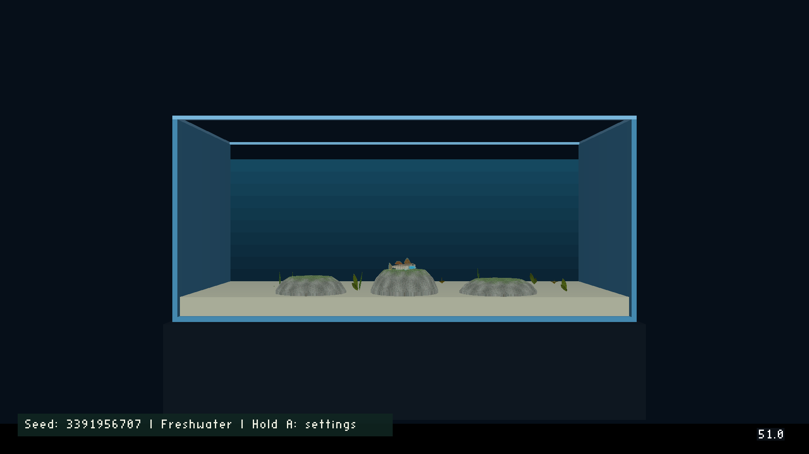
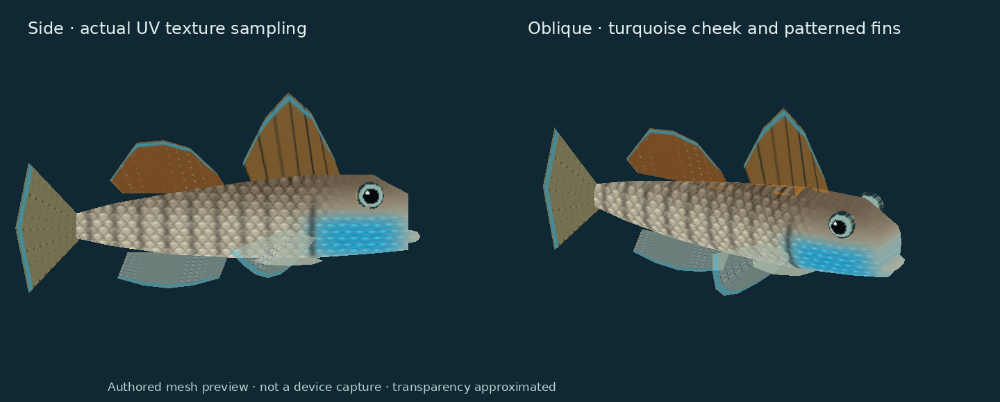
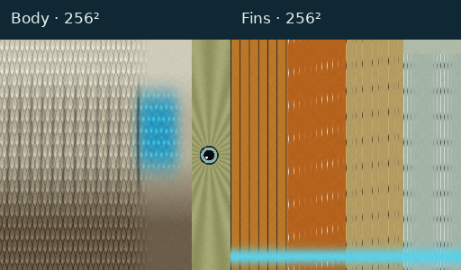
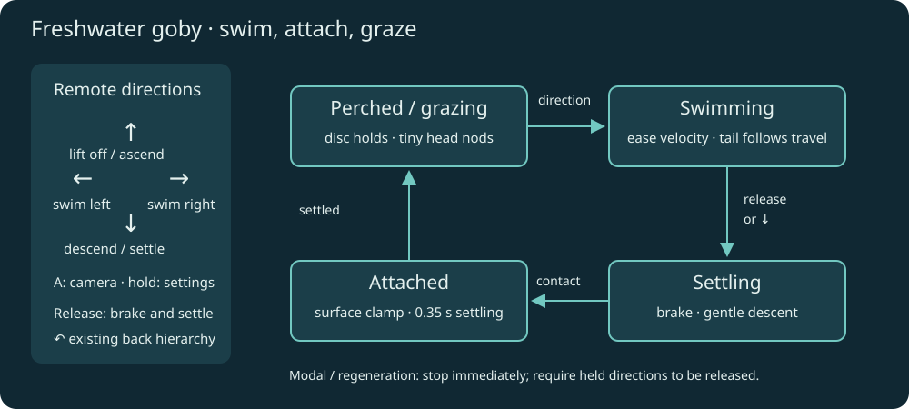
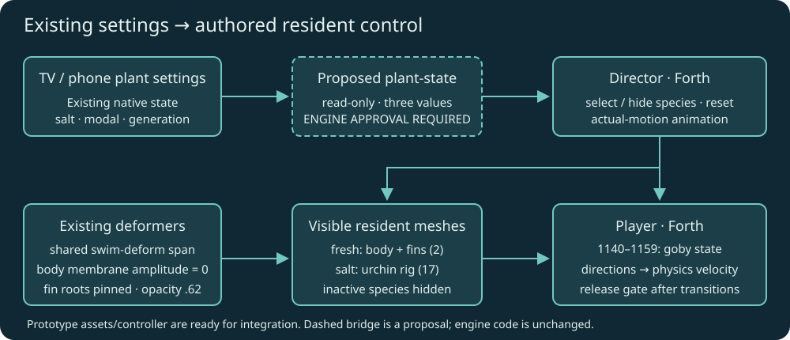

6 October 2026. Selected by Will: rainbow goby for freshwater, with different controls from the sea urchin. Engine edits require a separate explicit approval.
Freshwater has one playable adult male Stiphodon ornatus. Saltwater retains the sea urchin. Changing water type in the existing settings regenerates plants and switches the resident, clears held input and resets locomotion. Seed and growth speed keep their current meanings. Returning through the selector keeps the existing back-arrow hierarchy.
This is a planted aquarium with rounded grazing stones, rather than a claim to reproduce a rocky stream. Independent research and sources were saved before this plan and prototype.
A3 portrait research poster · Printable PDF.
Three rounded rocks are now visible in freshwater, with a deterministic 256² mottled stone/biofilm texture. Broad top surfaces support a stable grazing pose. The goby's authored Forth support profile uses the same rock dimensions as the meshes, along its fixed swim plane. Saltwater hides these freshwater perches. This adds three visual actors and 384 source triangles, without additional physics bodies or engine changes. Four 256² animal/rock textures share the existing 512² permanent page.
The cast1 launch check passed (J-f5bfc4b9d263); its log reports the goby settled
at Z=1.365 on the centre stone. Twelve goby tests pass, including support heights,
settling and compilation of the actual exported scripts in both configurations.


This is a source-mesh preview, not a device capture. The prototype is two meshes
(body and fins), with two deterministic 256² maps. Fins use existing material
translucency at 0.62 and existing swim-deform; body uses the same head/tail span
with membrane amplitude zero. The joined pelvic pad is pinned against fin flutter.
Opaque eyes and lip remain in the body mesh. Two dorsals, a broad caudal fin and
raised eyes distinguish the goby from betta/clownfish assets.
Will requested substantially better textures and colours. The revised albedo uses silver/brown overlapping scales and broken dusky posterior bars, a local turquoise cheek, orange dorsal membranes, dark first-dorsal rays, spots along second-dorsal/tail/pectoral rays, and thin cyan margins. Eyes now have a dark pupil, coloured iris and small highlight. The maps remain 256²; geometry, actor count, fin opacity and motion UV weights are unchanged.

The updated preview rasterizes interpolated UVs with bilinear texture sampling;
the first preview incorrectly presented one sampled colour per face and hid
most texture detail. Neither preview is a device screenshot. The first version
is retained under first-prototype/ for comparison. Authoring remains editable
in goby.py; no photographic pixels were copied into the maps.
| Input | Freshwater goby | Saltwater urchin |
|---|---|---|
| ← / → | Detach and swim horizontally; turn smoothly | Existing slow substrate crawl |
| ↑ | Lift off and swim upward | Existing movement in tank depth |
| ↓ | Descend; settle and graze when near a perch | Existing movement in tank depth |
| Release | Brake, descend gently, attach, then graze | Stop crawling; feet finish recovery |
| Short A | Existing camera toggle | Existing camera toggle |
| Hold A | Existing plant settings | Existing plant settings |
| Back arrow | Close/apply settings, then selector, then exit | Same hierarchy |
Goby movement stays in the visible X/Z swimming plane. The initial authored speed targets are 0.55 horizontally and 0.42 upward, with exponential velocity easing, a gentle 0.16 descent after release and a 0.45 deliberate descent. These are game tuning values. Position clamps stop outward speed at the glass. Attachment settles before grazing; stationary grazing uses tiny head nods and pectoral flutter with no whole-body crawl. Tail waves follow actual displacement, so pressing against glass does not produce a full swimming animation.

Keep the existing Player physics carrier. Its urchin mesh is visible only in
saltwater. Two anchored goby mesh actors follow it only in freshwater; hide the
urchin feet and eight spine actors and skip their motion scripts in freshwater.
Keep plant meshes as eight native foliage groups. Authored stones have matching
surface-height metadata used by gb-floor; no new collision engine is proposed.
Use low, broad flat-topped stones so attachment has an unambiguous surface.
Forth owns goby state and input envelopes. Mailboxes 1140–1159 are reserved for the goby controller, separate from urchin 800–967 and 1000–1111. Director owns the resident selection, appearance and actual-motion animation; Player owns physics velocity. After water/regeneration/modal transitions, zero speed and require directional release before accepting movement. Re-anchor urchin contacts when returning to saltwater. Phone directions feed the same held-input path.

The automatic resident switch described above is an integration assumption, not an approved engine requirement. Will questioned the engine bridge on 6 October. Goby meshes, textures and movement use existing engine capabilities. Do not implement a new primitive until the scope and existing binding options have been discussed and permission given.
Read-only investigation found that the native plant settings own salt, modal
and generation in wfsource/source/game/plant_settings.h. plant-step advances
geometry but returns none of these values. An OAS/OAD value alone would be a
second unsynchronised water setting; it cannot read the setting already changed
by the phone or TV interface.
The original proposal was one read-only Forth primitive in
engine/stubs/scripting_zforth.cc, reusing existing state:
plant-state ( -- saltwater modal generation )
The new syscall would be 178 (custom 50, currently unused). Its implementation
would only push those three existing fields; add : plant-state 178 sys ; to the
existing bridge dictionary. No new C++ settings state, renderer changes, UI
changes, water-setting writes or hardcoded goby mailbox addresses are proposed.
Forth stores the results in its authored bindings. Invoke after registration,
and once per Director frame, before species visibility and movement decisions.
Generation change triggers a reset even when the water type did not change.
Modal state blocks locomotion and protects held input across closing settings.
Follow-up audit: game.cc already pauses level updates while plant settings are
modal, so a new modal query is not needed simply to pause locomotion. Existing
plant settings do not currently publish water selection to a Forth mailbox;
the saved OAS/OAD runtime-settings migration remains a proposal rather than a
shipped binding. Prefer an authored water mailbox over a plant-specific syscall
if that integration is implemented. Do not imply that adding a schema by itself
already connects the native TV/phone setting to the authored mailbox.
Proposed new dispatch branch, between existing custom 49 and 72:
} else if (custom == 50) {
const auto& s = planted::state();
zf_push(ctx, s.salt ? 1 : 0);
zf_push(ctx, s.modal ? 1 : 0);
zf_push(ctx, s.generation);
Add the one dictionary definition to the existing zf_eval bridge string.
Validate the stack order, current field values and absence of mutations. The
generation is used transiently for comparison, rather than accumulating a
fixed-point time counter. The proposal affects only the scripting bridge file.
Await Will's explicit permission before editing engine code. This follows AGENTS.md: “prepare a concrete proposal describing the required engine changes and obtain permission before editing engine code.”
pytest -q tests/test_goby.py: 8 passed, covering real Forth in float and
simulated 16.16 mailbox modes, valid source geometry and deterministic textures.